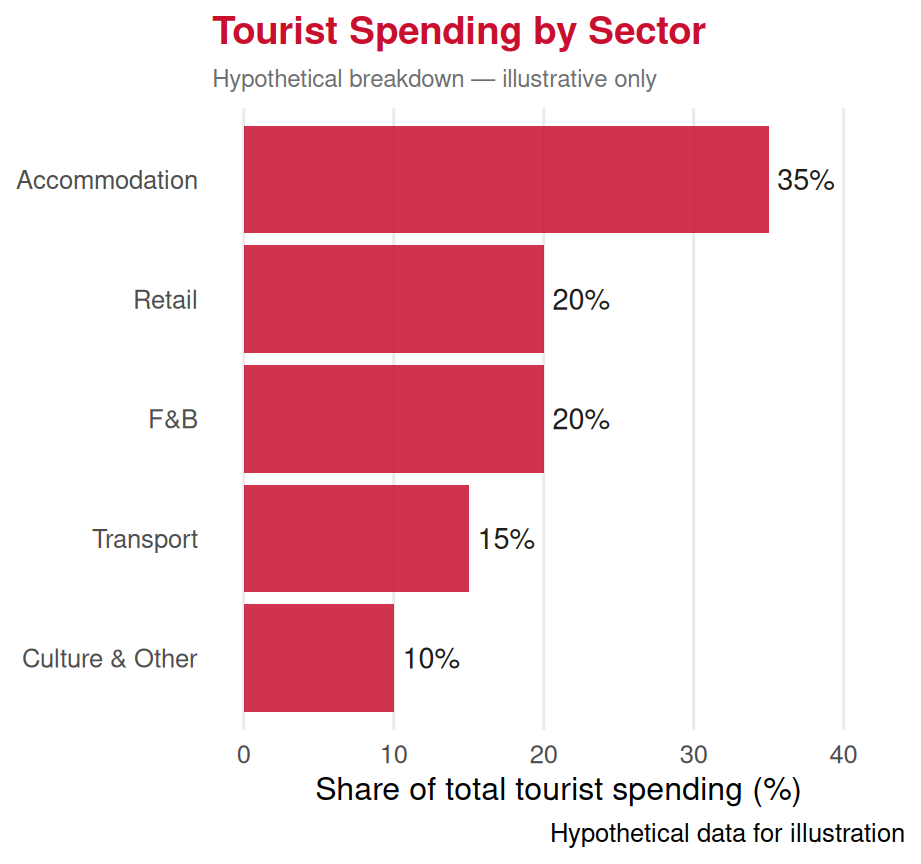
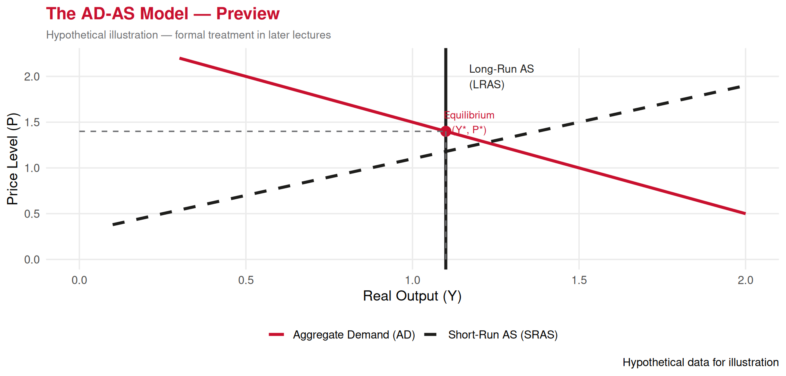

Aggregation: The Concept
Lecture 21: From Individual Transactions to the Economy as a Whole
Paulo Fagandini
2026
Recap: The Macro Panorama ⏪
Last lecture we identified the six big macroeconomic issues:
🌱 Economic growth & living standards
🏭 Productivity
🎢 Recessions & expansions
💼 Unemployment
🔥 Inflation
🌐 International interdependence
To study all of these, we need one fundamental tool:
👉 Aggregation — summing up millions of individual decisions into a single economy-wide picture.
Part I: What is Aggregation?
The Problem of Scale 🔬
In microeconomics, we studied one consumer, one firm, one market.
But Portugal has:
👥 ~10 million consumers
🏭 ~1.3 million registered firms
🤝 Billions of transactions per year
🏨 ~8,000 hotels and similar accommodations
We cannot track every transaction. We need a way to compress all of this information into a manageable set of numbers.
👉 That is exactly what aggregation does.
What is Aggregation? 🧩
Aggregation is the process of summing individual economic variables — the spending decisions of millions of households, the output of thousands of firms — to obtain totals for the economy as a whole.
Examples:
| Individual variable | Aggregate variable |
|---|---|
| Ana spends €80/month on restaurant meals | Household consumption |
| Pestana Hotels invests in a new resort | Business investment |
| Portuguese government builds a new highway | Government expenditure |
| A Lisbon hotel sells rooms to German tourists | Exports of services |
Why Does Aggregation Work? 🤔
Aggregation works because — even though individuals differ — their combined behaviour follows predictable patterns.
Think of a thermometer 🌡️
You cannot track every molecule of air in this room individually. But the average kinetic energy of all molecules gives you a reliable, useful number: temperature.
Similarly, we cannot track every euro spent in Portugal. But the sum of all spending gives us a reliable number: GDP.
💡 Key insight:
Individual details get “averaged out”. What remains is the systematic, predictable part of economic behaviour — which is exactly what policy needs to respond to.
⚠️ The cost: Aggregation hides distribution — who gets what.
The Trade-off of Aggregation ⚖️
✔️ What aggregation gives us:
- A manageable picture of the whole economy
- Comparisons across time and countries
- Targets for economic policy
- Early warning indicators (recessions, inflation)
⚠️ What aggregation hides:
- Inequality: who earns the income?
- Regional differences: Lisbon vs interior Portugal
- Sectoral differences: tourism booming while manufacturing shrinks
- Quality of jobs: full-time vs precarious seasonal work
👉 A country’s GDP can grow while most workers see their wages fall — if growth is concentrated at the top. Aggregation alone does not tell us this.
Part II: The Circular Flow of Income
Economies as a Flow ♻️
The best way to understand aggregation is through the circular flow of income model.
The circular flow model shows how money, goods, and services continuously flow between the main economic agents — households, firms, the government, and the rest of the world.
We will build it up step by step, starting simple and adding complexity.
Step 1: Two Agents — Households & Firms 🔄
In the simplest economy:
Households 👪
- Own the factors of production (labour, capital, land)
- Sell them to firms → earn income
- Spend that income on goods and services → consumption
Firms 🏭
- Buy factors of production → pay wages, rents, profits
- Produce goods and services → earn revenue
👉 Money flows in a circle: from firms to households (as income), and back from households to firms (as spending).
Step 2: Adding the Government 🏛️
In a real economy, the government plays a major role:
Government collects:
💰 Taxes — from households (income tax) and firms (corporate tax)
Government spends:
🏫 Public services — education, health, infrastructure
🤝 Transfer payments — pensions, unemployment benefits (money back to households without a service in return)
Key implication:
Not all household income is spent on consumption. Some leaks out as taxes.
Not all firm revenue stays in the private sector. Government injects spending back in.
👉 The flow is still circular, but the government acts as a redistribution node.
Step 3: Adding the Rest of the World 🌐
Real economies also trade with the outside world:
Exports 📤
Foreigners buy Portuguese goods and services
👉 Money flows in to Portugal
For tourism: foreign visitors spending in Portuguese hotels, restaurants, attractions = export of services
Imports 📥
Portuguese households and firms buy foreign goods
👉 Money flows out of Portugal
Net Exports (NX)
\[NX = \text{Exports} - \text{Imports}\]
If NX > 0: more money flowing in than out (trade surplus)
If NX < 0: more money flowing out than in (trade deficit)
Portugal typically runs a services surplus (tourism!) but a goods deficit.
The Full Circular Flow 🌍
The complete model has four agents and four types of spending:
| Agent | Type of spending | Symbol |
|---|---|---|
| Households | Consumption | C |
| Firms | Investment | I |
| Government | Government expenditure | G |
| Rest of world | Net exports | NX |
. . .
The fundamental identity:
\[Y = C + I + G + NX\]
👉 Every euro of output produced in Portugal must be purchased by someone — this equation always holds, by definition. This is the expenditure approach to GDP (next lecture).
Leakages vs Injections
| Leakages 📤 | Injections 📥 |
|---|---|
| Savings (S) | Investment (I) |
| Taxes (T) | Government spending (G) |
| Imports (M) | Exports (X) |
In equilibrium:
\[S + T + M = I + G + X\]
💡 What leaks out of the circular flow must be matched by injections back in.
Part III: Aggregating Output — What Counts?
The Value-Added Principle 🔗
When we aggregate output, we face a problem: double counting.
Example — a tourist breakfast in Porto:
| Stage | Seller | Revenue | Cost of inputs | Value Added |
|---|---|---|---|---|
| Wheat farm | Farmer | €0.50 | €0 | €0.50 |
| Flour mill | Miller | €1.20 | €0.50 | €0.70 |
| Bakery | Baker | €2.00 | €1.20 | €0.80 |
| Total GDP contribution | €2.00 |
👉 We do not add €0.50 + €1.20 + €2.00 = €3.70 (that would count the bread three times).
We add only the value added at each stage: €0.50 + €0.70 + €0.80 = €2.00.
What Gets Included in Aggregation? ✅
✔️ Included:
- Final goods and services (sold to end users)
- Government services (at cost)
- New housing construction
- Changes in business inventories
- Exports of goods and services
🏨 A German tourist staying at a Lisbon hotel: the room rate is included as an export of services.
❌ Not included:
- Intermediate goods (used to produce other goods)
- Sales of existing assets (second-hand house sales)
- Financial transactions (buying shares)
- Transfer payments (pensions, subsidies)
- Unpaid work (home cooking, volunteering)
🤔 Why not second-hand houses? The house was already counted when it was first built.
The Tourism Aggregation Problem 🏖️
Tourism is a cross-cutting industry — it does not have a single production line. This makes aggregation tricky.
When a British tourist spends €1,000 in Portugal:
- €350 at hotels 🏨 → counted under accommodation services
- €200 at restaurants 🍴 → counted under food & beverage
- €150 on transport 🚌 → counted under transport services
- €200 on retail :shopping_bags: → counted under retail trade
- €100 on cultural attractions 🎭 → counted under arts & entertainment
👉 That €1,000 is spread across multiple sectors in the national accounts. There is no single “tourism line” in GDP — it must be reconstructed using Tourism Satellite Accounts (TSA).

Tourism’s Share in the Portuguese Economy 🇵🇹

👉 Tourism represents a significant and growing share of Portugal’s GDP — making macroeconomic performance especially important for this industry.
Part IV: Aggregate Demand and Aggregate Supply
From Individual to Aggregate Curves 📈
In microeconomics we drew individual demand and supply curves for single markets.
In macroeconomics we aggregate these into:
🛒 Aggregate Demand (AD)
The total demand for all goods and services in an economy at each price level.
\[AD = C + I + G + NX\]
Downward sloping: when prices rise, real purchasing power falls, real wealth falls, and exports become less competitive.
🏭 Aggregate Supply (AS)
The total output all firms in an economy are willing to produce at each price level.
Upward sloping in the short run: higher prices make production more profitable.
Vertical in the long run: output is determined by real factors (technology, labour, capital), not prices.
The AD-AS Model (Preview) 📊

👉 This model gives us the macroeconomic equivalent of the supply-demand diagram we used in microeconomics. We will use it throughout the macro block.
The Three Approaches to Measuring Aggregate Output 📏
Any economy can be measured from three equivalent angles — they always give the same answer:
📤 Expenditure approach
Add up all spending on final goods and services
\[Y = C + I + G + NX\]
Who buys the output?
📨 Income approach
Add up all incomes earned in production
\[Y = W + R + \Pi + \text{taxes}\]
(Wages + Rents + Profits)
Who earns from production?
🏭 Production (value-added) approach
Add up value added at each stage of production
\[Y = \sum \text{Value Added}\]
What is produced?
💡 All three approaches measure the same thing — total economic activity — just from different perspectives. Next lecture we focus on the expenditure approach: GDP.
Exercises
📝 Exercise 1 — Multiple Choice
A local tour operator in the Algarve buys sunscreen bottles from a wholesaler for €4 each, and sells them to tourists for €7 each. What is the value added by the tour operator, and how much does this contribute to GDP?
(A) €7 — the full selling price is GDP
(B) €4 — only intermediate costs count
(C) €3 — only the value added by the tour operator counts
(D) €11 — the sum of all transactions counts
Correct answer: (C)
The tour operator’s value added = €7 − €4 = €3. GDP counts only value added at each stage to avoid double-counting. The €4 paid to the wholesaler was already (or will be) counted as the wholesaler’s value added. Option A double-counts the wholesale stage; D triple-counts it.
📝 Exercise 2 — Multiple Choice
Which of the following transactions would NOT be included in Portugal’s GDP?
(A) A German tourist pays €150 to stay in a Porto hotel
(B) The Portuguese government pays €2,000/month in pensions to a retired teacher
(C) A new Airbus A320 is purchased by TAP Air Portugal for its fleet
(D) A Portuguese construction company builds 10 new apartments
Correct answer: (B)
Transfer payments (pensions, unemployment benefits) are not included in GDP — they redistribute existing income but do not correspond to new production of goods or services. Option A is an export of services (counted). Option C is investment (counted). Option D is investment in new construction (counted).
📝 Exercise 3 — Open Question
Consider a simplified tourism economy with three firms:
- Quinta do Algarve (wine producer): sells wine to a restaurant for €60. Inputs from outside the economy cost €10.
- Restaurante Praia (restaurant): buys wine for €60 and other ingredients for €20, and sells meals to tourists for €160.
- Hotel Maré (hotel): builds a new outdoor terrace at a cost of €500 (inputs purchased from local suppliers for €300, rest is labour).
(a) Calculate the value added by each firm. (3 marks)
(b) What is the total contribution to GDP of these three firms? (2 marks)
(c) To which component of GDP (C, I, G, or NX) does each transaction belong? Justify briefly. (3 marks)
(d) If the meals at Restaurante Praia were purchased exclusively by foreign tourists, how would your classification in (c) change? (2 marks)
Solution:
(a) - Quinta do Algarve: €60 − €10 = €50 - Restaurante Praia: €160 − €60 − €20 = €80 - Hotel Maré: €500 − €300 = €200 (value of new terrace less purchased inputs)
(b) Total GDP contribution = €50 + €80 + €200 = €330
(c) Restaurant meals sold to domestic consumers → C (consumption). Hotel terrace construction → I (investment, as it is a new capital asset). Wine sold to the restaurant is an intermediate good → not counted directly (captured via value added).
(d) If meals are purchased by foreign tourists, they represent an export of services → classified under NX (net exports), not C. The money flows into Portugal from abroad.
Summary 📚
Today we covered:
✅ Aggregation — summing individual variables into economy-wide totals
✅ The circular flow of income — households, firms, government, and the rest of the world
✅ Leakages (savings, taxes, imports) and injections (investment, government spending, exports)
✅ The value-added principle — how to avoid double counting
✅ What is and is not included in aggregate output
✅ The three approaches to measuring output (expenditure, income, production)
Next lecture (Lecture 22):
🔍 GDP in depth — the expenditure approach, nominal vs real GDP, and what GDP tells us (and doesn’t tell us) about well-being.
Thank You! 👋
Questions?
📧 paulo.fagandini@ext.universidadeeuropeia.pt
Next class: Friday, May 8th, 2026

Economics of Tourism | Lecture 21